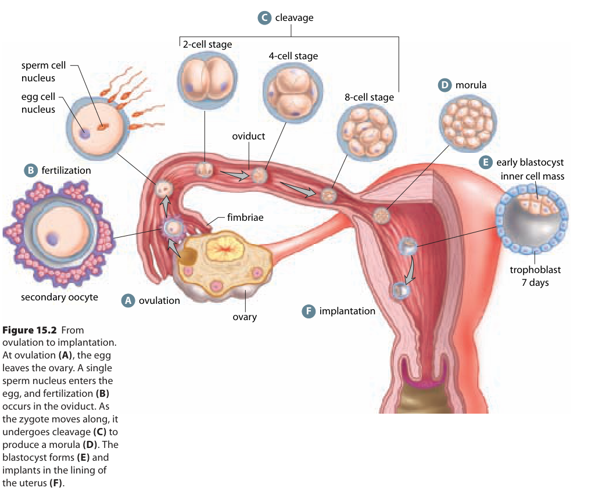
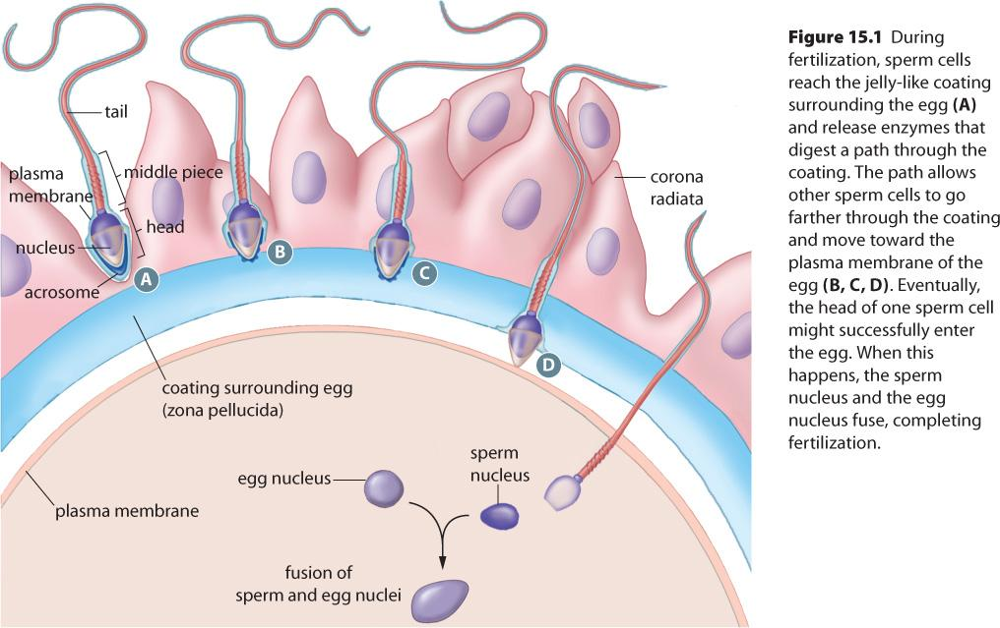

Learn · Chapter 15
How does the joining of two gametes begin a new developmental pathway?
Learning goal
Explain where fertilization normally occurs, how one sperm contributes its chromosomes, and how the diploid chromosome number is restored.
Before you begin
A gamete is a haploid sex cell. An oviduct transports the oocyte; the uterus is the usual site of later implantation.
Expected work: one completed lesson check. Supported practice, videos and textbook questions are optional. Saved writing is not automatically graded.
Chapter 15 · printed pp. 508–509
Key terms: · · ·
Key terms
Use these definitions when you need help with a term.
Releasing an egg and fertilizing it are separate events. At ovulation, an ovary releases a secondary oocyte, the cell commonly called an egg at this stage. The finger-like fimbriae near the end of an oviduct help sweep it into the tube. Cilia, tiny moving projections lining the tube, and muscular contractions help carry it toward the uterus.
normally occurs in an oviduct, also called a uterine or Fallopian tube. Sperm deposited in the vagina travel through the cervix and uterus to reach the tube. The uterus is therefore part of the sperm's route, but it is not the usual meeting place. Most sperm never reach the oocyte: conditions such as vaginal acidity and the route through the reproductive tract reduce their numbers. An unfertilized oocyte also remains capable of fertilization for only a limited time, roughly a day after ovulation. Arrival at the right location and time both matter.
Read the overview below in order. At A, locate the ovary and the released secondary oocyte beside the tube opening. At B, identify fertilization inside the oviduct. Follow the arrows toward the uterus, but leave the later cell stages for the next lesson. The large cell pictures are magnified views connected to locations; they are not cells drawn at the same scale as the organs.

[Figure: Follow the secondary oocyte from the ovary, then trace fertilization in the uterine tube and early cell divisions before implantation. Compare cell number with overall embryo size. | ./assets/figures/ch15-source-cleavage.png]A gamete is a sex cell carrying one chromosome set, described as haploid or n. A typical human sperm contributes 23 chromosomes and the oocyte contributes 23. Together they establish the number, 2n = 46, in one . Diploid means two chromosome sets in a cell, not two cells. Each set brings genetic information from a different gamete.
The oocyte has its own plasma membrane, the boundary of the cell. Outside that membrane is the zona pellucida, a protein-rich coat. Farther out are surrounding follicle cells called the corona radiata. Reaching an outer covering is not yet the same as entering the oocyte.
The detailed source figure below shows these layers. Find the acrosome at the front of the sperm head near A. This cap contains enzymes that help sperm pass through the surrounding material, together with sperm movement and interactions with the layers. Trace inward from the corona radiata through the zona pellucida to the oocyte's plasma membrane. Positions A–D illustrate stages of approach; they do not mean that four sperm should all enter one oocyte.

[Figure: Source Figure 15.1: sperm approach through corona radiata cells and the zona pellucida toward the oocyte plasma membrane. The sperm head includes an acrosome and nucleus. Positions A to D illustrate progressive approach. The lower drawing summarizes the meeting of parental chromosome contributions. | ./assets/figures/ch15-source-fertilization-detail.jpg]When a sperm reaches and fuses with the oocyte membrane, its contribution enters the cell and helps activate it. The secondary oocyte completes its final meiotic division, meiosis II. Meiosis is the division process that prepares a haploid chromosome contribution. Small sacs called cortical granules release material near the oocyte surface, changing the zona pellucida and helping prevent additional sperm from entering. These changes protect the normal combination of one sperm contribution and one oocyte contribution.
The textbook's statement on p. 508 about an immediate electrical block should not be treated as the established human mechanism. Rapid electrical blocks are described in some other animals. For human fertilization here, follow the cortical and zona changes after fusion, and distinguish attachment to an outer coat from successful entry.
Finally, the sperm and oocyte chromosome contributions are brought together for development. The source drawing summarizes this as “fusion of sperm and egg nuclei.” In the more detailed sequence, the two nuclear envelopes break down and the parental chromosomes take part in the first division. The result needed now is one diploid zygote, not a cell with several sperm contributions. The drawing does not show the cortical granules or every chromosome movement.
Follow the process as a set of requirements. The ovary must release a suitable oocyte. Sperm must reach it in the oviduct. They must interact successfully with its coverings, and one sperm must fuse with the cell. Normal chromosome contributions and activation then allow a zygote to begin development. Success at an earlier step does not establish that every later step happened.
For example, imagine that sperm reach the zona pellucida but cannot pass through it. Their arrival in the correct tube would not establish successful fertilization: the membrane-fusion step has not been reached. If the failure instead occurs after one sperm enters, so that extra sperm contributions are not prevented, the concern is an abnormal chromosome combination. These explanations identify different failed steps rather than calling every difficulty a hormone problem.
Hormones help coordinate oocyte maturation and ovulation. Physical transport is another requirement. Evidence of normal hormonal control cannot by itself prove that two cells met. Likewise, the first sperm to reach the outer covering is not necessarily the sperm that enters. The textbook's p. 509 question uses a simplified account in which enzyme release by several sperm helps passage through the coverings. Use it to distinguish arrival from successful entry, not to claim that one fixed number of sperm is always needed.
We can now connect the opening question to an outcome: fertilization joins two haploid contributions in one cell at the usual site in the oviduct. That zygote can undergo divisions while moving toward the uterus. The next question is how cell number and organization change during that journey.
Worked example
In an illustrative animal species, a typical body cell has 18 chromosomes. A normal sperm and egg complete fertilization. A laboratory record labels the immediate product “two cells, each with 18 chromosomes.” Does that description fit the stated stage?
For humans, the same reasoning gives 23 + 23 = 46. Chromosome-set number and DNA copying are different descriptions: copying DNA in preparation for division does not by itself add another parental chromosome set. Detailed copying and separation return in the cell-division chapter.